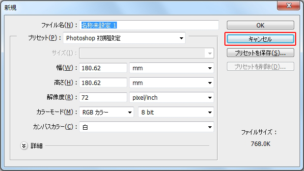
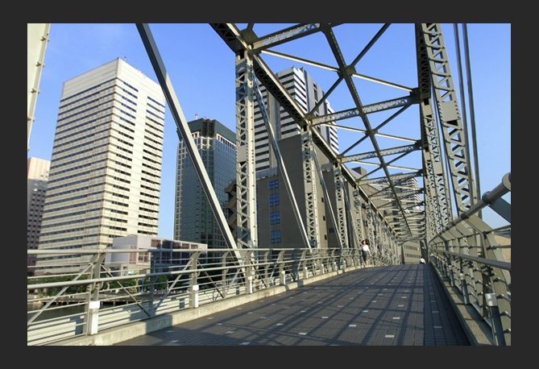
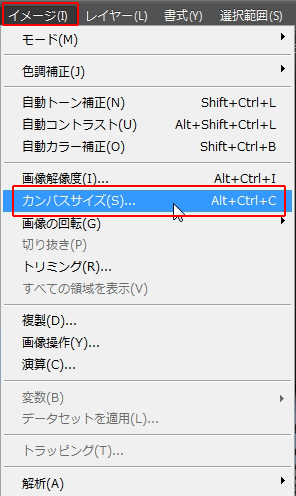
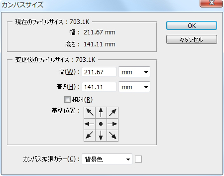
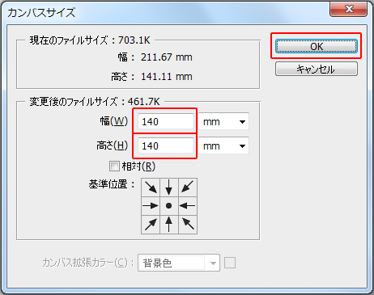
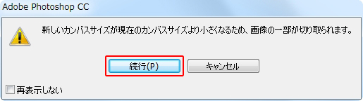
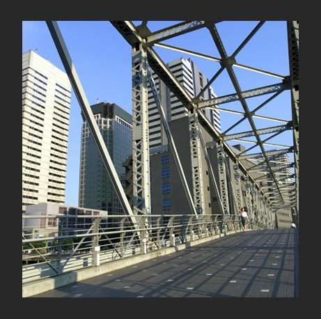

本節では、画像のサイズであるカンバスサイズの調整を学習します。
Photoshopでは新規ファイルを作成する際に、必ず「カンバスサイズ」を設定します。
新規ファイルを作成してみましょう。
メニューバーの[ファイル]-[新規]を選択します。

新規ダイアログボックス
ここで設定する画像の「幅」と「高さ」が「カンバスサイズ」です。
ここでは、確認のみとします。［キャンセル］ボタンをクリックしましょう。
デジタルカメラから取り込んだ画像や、スキャナーを使って取り込んだ画像など
すでに「カンバスサイズ」が設定されています。
素材フォルダ「PS04」から、素材ファイル4_3_1.psdを開いてください。

「カンバスサイズ」を確認してみましょう。
メニューバーの[イメージ]-[カンバスサイズ]を選択します。

[カンバスサイズ]ダイアログボックスが表示されます。

現在のカンバスサイズは、「幅：211.67mm」、「高さ：141.11mm」です。
カンバスサイズを変更します。
[幅]に《140mm》と[高さ]に《140 mm》を入力します。
[基準位置]はカンバスサイズを変更する基準となります。
中心から上下左右に等しく変更する場合は、中心を選択します。
[OK]ボタンをクリックします。

指定したカンバスサイズが画像の大きさを下回ったため、
警告ダイアログボックスが表示されます。
[続行]ボタンをクリックします。

指定したサイズでカンバスサイズが変更されました。

以上でこの項の学習は終了です。
ファイルは閉じて次の項へ進んでください。